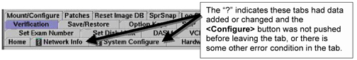

If the <Configure> button is not pushed to commit changes to a tab, or an error is present in a tab, a question mark will be seen on the tab, as shown in Illustration 11.
Illustration 11: CONFIGURATION PROBLEM EXAMPLE
